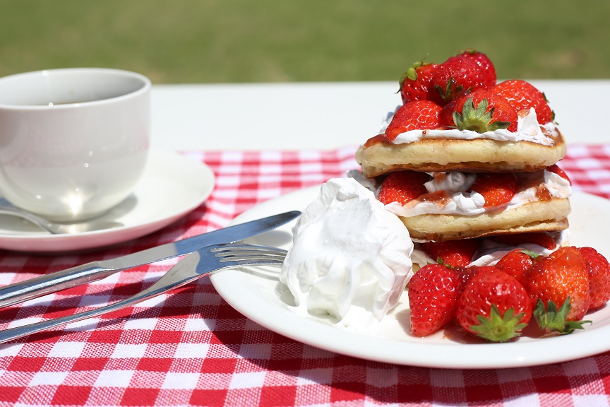

SNS映えするおしゃれご飯
苺たっぷりパンケーキの作り方

旬のいちごがた～っぷり！ふわっふわ～の絶品パンケーキは休日ブランチやおやつにおすすめ！
おいしい苺がたっぷり添えられたパンケーキを作ってみましょう。
ワンポイント！今回は苺を使っていますが、お好みのフルーツに置き換えても大丈夫ですよ♪
材料
- 強力粉100ｇ
- ベーキングパウダー5ｇ
- 卵1個
- 牛乳80ml
- さとう大さじ1
- 旬の苺を1パック
料理手順
- ボールに卵、牛乳、砂糖を入れ、よく混ぜ合わせる。
- 小麦粉とベーキングは合わせ、1. のボールに加えてさっくり混ぜる。
- フライパンかホットプレートを熱し、バターを入れ、生地をお玉一つ分位入れる。
- 旬の苺をパンケーキに添える。お好みでバターや粉砂糖、蜂蜜なども添えて出来上がり♪
TOPページへ戻る
〒１００-１１１１
東京都新宿区
市谷左内町0-0-0
Copyright © 2020 株式会社技術評論社 All Rights Reserved.